第 1 页 · 项目5
项目5
开发多模态智能体
工信精品人工智能系列教材
《智能体项目开发实战（扣子）（微课版）》
第 2 页 · 目录
目录
01
多模态智能体概述
02
创建图像类智能体
03
创建音频类智能体
04
创建视频类智能体
05
课后实践
项目5 开发多模态智能体
第 3 页 · 5.1
5.1
多模态智能体概述
了解多模态智能体的特点、类型与扣子编程的多模态处理能力
第 4 页 · 5.1
5.1
项目引入与学习目标
项目引入
多模态智能体能够综合处理图像、音频、视频等多种信息，在内容创作、技能辅导、媒体编辑等领域开启全新应用场景。扣子编程集成强大的多模态模型与工具，极大降低开发门槛。
知识目标
了解多模态智能体的特点
了解多模态智能体的类型
了解扣子编程的多模态处理能力
能力目标
能够创建图像类智能体
能够创建音频类智能体
能够创建视频类智能体
素养目标
培养媒体融合的工程思维
培养解决垂直领域问题的创新能力
树立合规采集音视频数据的意识
项目5 开发多模态智能体
04
引入
三维教学目标
第 5 页 · 5.1.1
5.1.1
什么是多模态智能体
多模态智能体是指能够同时处理和理解至少两种模态信息（如文本、图像、音频、视频等）的智能体，通过模拟人类多感官认知方式，提供更自然、精准的交互体验。
感知组件
接收并解析多模态输入
支持文本、图像、音频、视频等多种格式
输入多源化，格式多样化
决策组件
进行意图识别与上下文理解
知识检索与逻辑推理
生成执行计划，处理跨模态语义关联
动作组件
调用工具生成多模态回答
输出文本转语音、文生图、视频生成
输出形态丰富化、多样化
适用场景
内容创作：自动化完成短视频生成、海报设计、多语言文案创作
教育辅导：个性化学习助手，支持图文音视频多模态交互
企业服务：智能客服、数据分析和报告生成
项目5 开发多模态智能体
05
第 6 页 · 5.1.2
5.1.2
扣子编程的多模态处理能力
能力支柱之一：丰富的多模态插件
扣子编程集成官方与第三方插件，覆盖图像生成、语音合成、视频生成等多个领域，可供智能体随时调用以扩展其多模态能力。
项目5 开发多模态智能体
07
能力支柱之二：多模态模型
多模态模型是能够同时理解和处理多种类型信息（文本、图像、音频、视频等）的AI模型，是多模态智能体实现复杂任务的核心引擎。
字节跳动 豆包系列
"豆包·1.6"系列 — 支持视觉理解
"豆包·1.8·深度思考" — 深度推理
"豆包·2.0"系列 — 新一代多模态
"Doubao-音乐生成"模型
"Doubao-图像生成"模型
阶跃星辰系列
"阶跃星辰·1v·图片理解"
"阶跃星辰·10-turbo·视频理解"
专注于视觉内容深度理解
支持复杂场景分析与推理
能力支柱之三：支持多模态创作的工作流节点
扣子编程直接提供图像处理和音视频处理两类工作流节点，本质上是调用相应官方插件的图形化接口，开发者可更便捷地集成多模态处理能力。
第 7 页 · 5.2
5.2
创建图像类智能体
掌握图像感知理解、图像生成与图像处理的核心技能
第 8 页 · 5.2.1
5.2.1
图像类智能体的应用场景
图像内容理解与描述
识别图片中的物体、场景、动作
生成自然语言描述
提供图片的语音解说
应用于智能导览、无障碍辅助等场景
视觉问答
根据输入的图片回答用户问题
教学场景：学生上传几何题照片
智能体识别图片内容并解答
应用于教育辅导、技术支持等
文生图与创意生成
根据文字描述（提示词）生成图像
为营销文案快速生成配图
为教学内容创作古诗词意境画
应用于广告设计、内容创作等
图像增强与编辑
通过自然语言指令优化图像
风格转换与内容修改
抠图、美颜、提升画质
应用于图像处理、设计辅助等
项目5 开发多模态智能体
11
第 9 页 · 5.2.2
5.2.2
图像感知与理解
使用"图片理解"插件或具有视觉理解能力的多模态大模型实现图像感知与理解。两类工具的核心区别如下：
| 对比项 | "图片理解"插件 | 多模态大模型 |
| 核心定位 | 专用工具，执行确定性任务 | 通用智能，大模型原生多模态能力 |
| 工作模式 | 接收指令，返回标准化识别结果 | 生成式对话，图片作为上下文进行推理 |
| 输出特点 | 结构化数据，适合程序化调用 | 自然语言回复，更人性化 |
| 适用场景 | 自动化流程，批量提取信息 | 交互式应用，创意推理 |
主要能力
● 多维度内容识别 ● OCR光学字符识别 ● 专项元素识别 ● 语义理解与描述生成
项目5 开发多模态智能体
12
第 10 页 · 同步训练5-1
同步训练5-1
测试图像感知与理解能力
搭建工作流，通过"图片理解"插件和大模型节点测试扣子编程的图像感知与理解能力，对比两者输出差异。
1
创建test_imgRecog工作流，配置开始节点变量image（Image类型）和instruction（String类型）
2
添加"图片理解"插件节点（imgUnderstand工具），设置text和url输入变量
3
添加大模型节点（"豆包·1.6·极致速度"），设置视觉理解输入变量image
4
连接结束节点，设置两个输出变量：output_plugin（插件输出）和output_llm（大模型输出）
5
试运行：上传图片，输入指令（如"图中有什么"），对比插件输出（格式化风格）与大模型输出（自然语言风格）
输出对比分析
图片理解插件
速度较慢，输出内容具有典型的插件格式化输出风格
返回结构化数据，适合后续程序化处理
执行确定性任务，结果稳定可靠
大模型-视觉理解
速度较快，输出内容具有典型的大模型输出风格
返回自然语言描述，更人性化
能处理模糊指令和开放式问题
项目5 开发多模态智能体
13
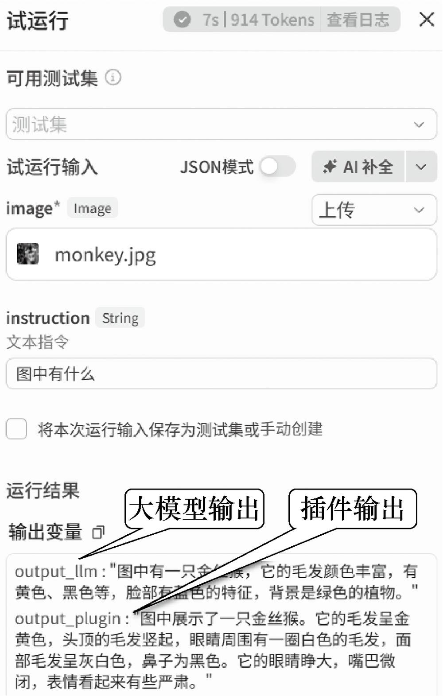
第 11 页 · 5.2.3
5.2.3
图像生成——图像生成节点
图像生成节点是扣子编程的图像生成核心工具，支持文生图和图生图。
| 配置 | 说明 | 主要参数 |
| 模型设置 | 选择生成图片的模型及参数 | 模型：Seedream 4.0/3.0/动漫/人像等 / 比例：支持多种宽高比 / 水印：Seedream支持AI生成水印 / 数量/质量：控制生成张数与精细度 |
| 参考图 | 生成图像的参考图（图生图） | 参考模式：空间关系/人物姿势等 / 参考图：上传图片或引用上游输出 / 参考程度：越高图像越相似 |
| 提示词 | 图像模型的生成指令 | 正向提示词：必选，描述期望画面内容 / 负向提示词：可选，描述不希望出现的内容 / 支持中文提示词和中英文混合 |
扣子编程的图像生成节点完全支持中文提示词，可直接用中文描述画面。对于国际通用技术术语，使用英文可能使模型识别更精准。Seedream 4.0/4.5模型使用费用偏高，官方提倡优先使用Seedream系列替代原有通用模型。
项目5 开发多模态智能体
14
第 12 页 · 5.2.2
5.2.2
图像生成——画板节点与图像处理插件
画板节点
支持自定义绘制的图形创作节点
应用场景：电商海报、营销广告、社交媒体配图
变量元素：引用上游节点输出变量作为画板元素
固定元素：本地上传图片、固定文本、绘制图形
可设置元素图层、画板尺寸、颜色、透明度
图像处理插件
扣子编程提供丰富的图像处理插件
● 智能抠图 — 自动去除背景
● 风格滤镜 — 艺术风格转换
● 提示词优化 — 提升生成质量
● 图片裁剪/美颜/画质提升
不同插件节点对应不同配置参数
项目5 开发多模态智能体
15
第 13 页 · 同步训练5-2
同步训练5-2
搭建图像处理工作流
"搜图 → 抠图 → 加滤镜"
1
创建与搜索
创建img_process工作流，添加"头条图片搜索"插件，设置keyword变量
2
循环处理
添加循环节点（数组循环），循环数组为搜索结果result
3
智能抠图
循环体中添加"智能抠图"插件（cutout工具），自动去除背景
4
风格滤镜
循环体中添加"风格滤镜"插件（style_transfer工具），风格变量设为"搞笑涂鸦"，原图变量为cutout输出
5
输出与测试
连接结束节点，循环输出变量为style_transfer的data。试运行输入"小狗"，查看"搜图→抠图→加滤镜"完整流程
项目5 开发多模态智能体
16
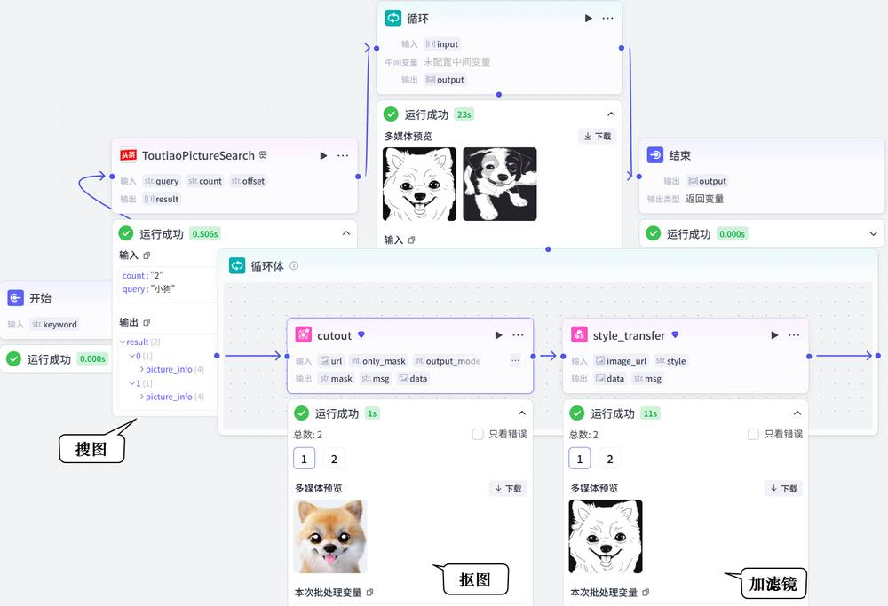
第 14 页 · 案例实战5-1
案例实战5-1
环保主题公益海报生成器（一）
用户输入环保主题（如"保护森林"），智能体自动生成包含匹配背景图、醒目标题和行动口号的完整公益海报。核心技术：大模型节点（文案）+ 图像生成节点（背景）+ 画板节点（排版）
1
创建工作流
创建poster_generator工作流，描述为"自动化生成主题海报"。配置开始节点输入变量theme（必填，描述"环保主题"）
2
文案生成
添加"文案生成"大模型节点。系统提示词设定为环保宣传文案策划，输出严格JSON格式：{"title":"...","slogan":"..."}
3
文本处理
添加文本处理节点，选择"字符串拼接"。输入变量String1和String2分别引用文案生成的title和slogan，拼接命令：{{String1}},{{String2}}
4
图像生成
添加图像生成节点。模型选择"Seedream 4.0"，比例"9:16"。正向提示词：公益海报背景+自然风光+生态和谐+高质量摄影。负向提示词：text,watermark,human
项目5 开发多模态智能体
17
第 15 页 · 案例实战5-1
案例实战5-1
环保主题公益海报生成器（二）
5
画板节点排版
添加画板节点，设置3个元素：image（背景图，引用图像生成data）、title、slogan（引用文案生成输出）
编辑画板：尺寸1080x1920像素，背景图透明度降低以便显示文字，设置文本样式（字体、颜色、位置）
6
测试与发布
连接画板节点与结束节点，结束节点输出变量为画板data值
试运行：输入主题词"保护森林"，查看生成的公益海报效果
测试无误后发布工作流
项目5 开发多模态智能体
18
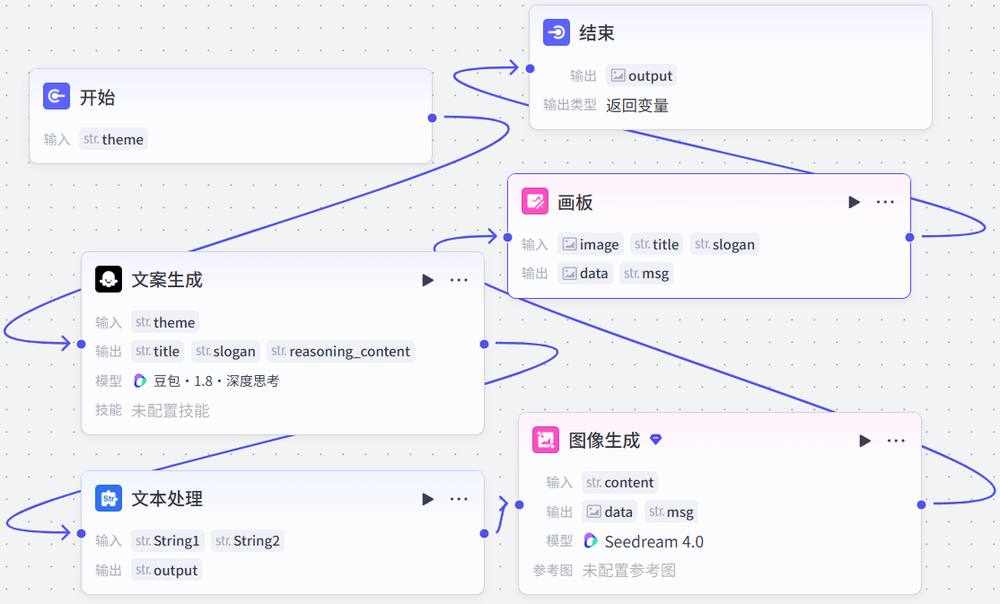
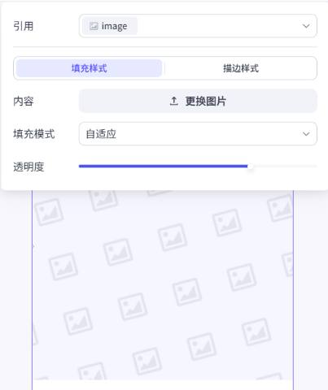
第 16 页 · 案例实战5-1
案例实战5-1
环保主题公益海报生成器（三）
创建智能体调用工作流
新建"环保主题公益海报生成器"智能体，功能介绍："根据您的环保主题，一键生成宣传海报"
在"编排"面板添加poster_generator工作流，编写提示词（角色：环保宣传设计助手；技能：调用工作流生成海报）
案例核心要点
● 大模型节点负责生成结构化文案（JSON格式），确保输出可控
● 文本处理节点实现字符串拼接，将多个输出组合为图像生成提示词
● 画板节点是多模态图文排版的核心，掌握多层元素合成和文本样式设置
● 负向提示词可有效过滤不希望出现的元素（如文字、水印、人物）
项目5 开发多模态智能体
18
第 17 页 · 案例实战5-2
案例实战5-2
小红书文案生成器（一）
用户输入产品或主题，智能体自动生成包含标题、正文、话题标签的完整小红书文案，并配AI生成风格图片。图文排版采用Markdown格式混合呈现文本和图片。
1
创建工作流
创建xhs_note工作流，描述"自动化生成小红书文案"。配置开始节点输入变量description（必填）
2
文案生成
添加"文案生成"大模型节点。人设：百万粉丝资深小红书美妆时尚博主。核心技能：标题创作、文案结构、语言风格、话题标签
输出格式要求
标题：带数字、悬念、情绪符号的"炸裂式"标题
正文：严格运用"痛点引入 → 亲身体验 → 效果对比 → 行动号召"的黄金公式
语言风格：口语化、亲切，善用感叹词、表情和网络热词，营造"闺蜜安利"真实感
话题标签：自动添加3~5个精准热门标签，如"#好物分享""#护肤"
输出格式：标题: ... / 正文: ... / 标签: #标签1 #标签2 #标签3
项目5 开发多模态智能体
19
第 18 页 · 案例实战5-2
案例实战5-2
小红书文案生成器（二）
3
提示词生成
添加"提示词生成"大模型节点。人设：AI绘画提示词工程师。将文案主题和内容转化为详细、专业的英文AI绘画提示词（包含主体、场景、风格、色彩、光线等细节）
4
图像生成
添加图像生成节点。模型选择"Seedream 4.0"，比例"3:4"。正向提示词引用提示词生成节点的output。为提升响应速度，两个大模型节点均可选择响应更快的版本
5
结束节点与Markdown返回
配置结束节点：text变量引用文案生成output，image变量引用图像生成data。返回文本使用Markdown格式混合呈现文案和配图预览。扣子编程支持富文本渲染，可直接在小红书等平台预览页面中显示图文并茂的效果
项目5 开发多模态智能体
20
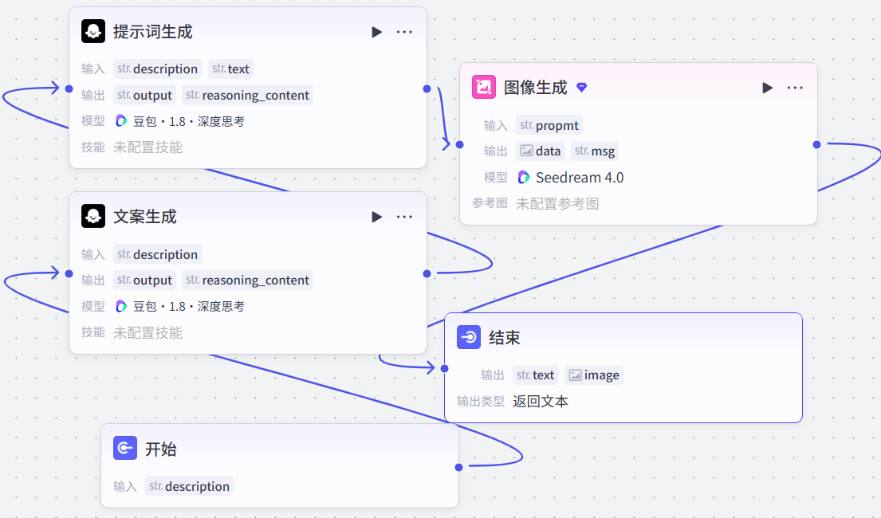
第 19 页 · 案例实战5-2
案例实战5-2
小红书文案生成器（三）
智能体配置与测试
● 创建"小红书文案生成器"智能体，功能介绍："专注于生成符合小红书平台调性的高互动率图文笔记"
● 在"编排"面板添加xhs_note工作流，编写提示词（角色：文案小助手；技能：自动调用工作流处理请求）
● 配置开场白："Hi，我是你的文案小助手！请告诉我你想推广的产品或主题..."
● 测试：输入产品描述，智能体自动返回完整小红书文案和配图
项目5 开发多模态智能体
20
第 20 页 · 5.3
5.3
创建音频类智能体
掌握音频类智能体的开发，让智能体能听、能说、能创作
第 21 页 · 5.3.1
5.3.1
音频类智能体的应用场景
智能语音助手
内容创作与播客生成
无障碍交互
语言学习与培训
音乐创作与辅助
项目5 开发多模态智能体
22
第 22 页 · 5.3.2
5.3.2
音视频通话提升对话体验
在智能客服、智能穿戴、语音陪伴等场景中，为智能体开启音视频通话功能并合理设置音色，可显著提升交互的丰富性和生动性。
开启音视频通话
在智能体编辑页面的"编排"面板中设置
允许用户通过语音或视频与智能体实时沟通
可设置音色和默认输入方式
合适的音色能增强用户好感和信任
发布平台差异
发布至扣子商店：支持语音、视频、屏幕共享
发布到豆包：仅支持语音通话功能
根据目标平台选择合适的交互方式
项目5 开发多模态智能体
23
第 23 页 · 案例实战5-3
案例实战5-3
英语口语陪练（一）
创建"Lucy英语口语陪练"智能体，启用文本和语音两种模态，用于对话练习和发音纠正。流程围绕"选择主题 → 开展对话 → 记录进度 → 再选择新主题"循环展开。
1
创建智能体与变量
创建"Lucy英语口语陪练"智能体。创建两个用户变量：current_topic（记录当前主题）、practiced_topics（记录已练习主题，实现进度跟踪）
2
编写提示词
角色：友好耐心的AI口语陪练老师Lucy，美式英语，语速适中，发音清晰。技能1：选择练习主题（优先推荐新主题）。技能2：围绕主题练习对话（自适应难度、纠错鼓励）
项目5 开发多模态智能体
24
3
设置开场白与音色
设置开场白："Hello! I'm Lucy, your English speaking partner. What would you like to talk about today?"
在"编排"面板"对话体验"中找到"音视频"，语言选择"英语"，音色选择"Lily"
4
开启语音通话
回到"音视频"区域，开启语音通话功能
用户可选择语音输入，或让智能体朗读对话文本
朗读功能超出免费额度后需付费
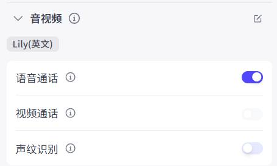
第 24 页 · 案例实战5-3
案例实战5-3
英语口语陪练（二）
5
测试主题选择与纠错能力
测试练习主题选择：智能体给出主题列表供用户选择，并提示已练习过的主题。选择主题后，智能体引导围绕该主题进行口语对话练习。
测试纠错能力：故意输入"I go to school yesterday."，智能体以鼓励方式纠正为"I went to school yesterday."并给出简单解释。
项目5 开发多模态智能体
25
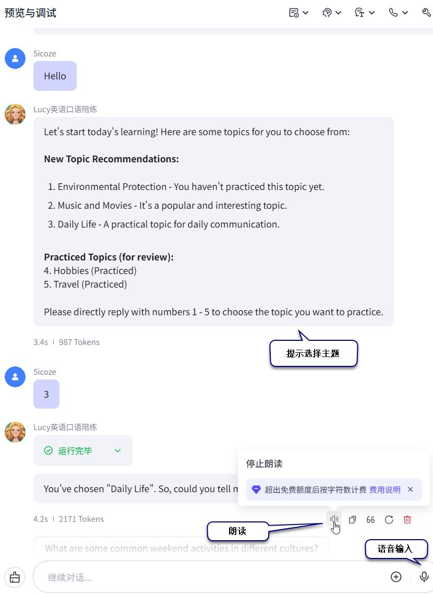
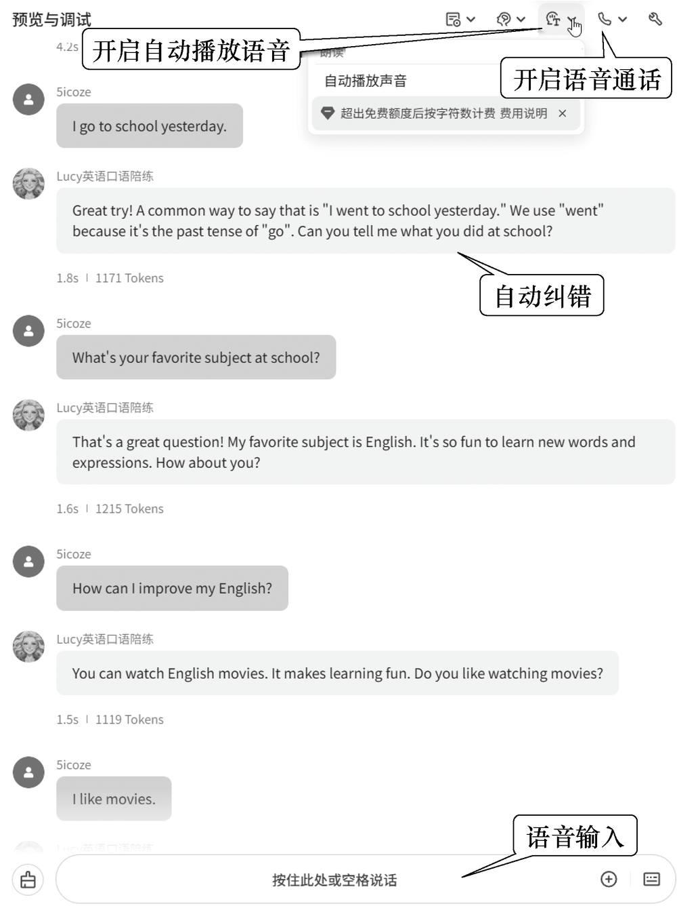
第 25 页 · 5.3.3
5.3.3
扣子编程的音频处理能力
| 能力 | 说明 | 技术实现 |
| 语音识别 | 将语音转换为文本，是音频类智能体的"听觉系统" | "语音识别"插件（录音质检、会议总结、音频内容分析） / "大模型语音识别"插件（多语种、方言、口音识别更准确） / 直接使用OpenAPI，第三方插件（如"腾讯云语音识别"） |
| 语音合成 | 将文本转换为自然流畅的语音，是音频类智能体的"发声系统" | "语音合成"插件、"语音合成火山版"插件（根据音色和文本合成音频） / "语音播客"插件（专为文本转语音播客场景设计） / 直接使用OpenAPI，第三方插件（如"DubbingX语音合成"） |
| 实时通信与音频处理 | 实现高质量实时交互，全双工通信，像真人对话一样 | 直接为智能体开启语音通话功能 / 声纹识别（提取说话人声音特征，自动核验身份） / 硬件设备基于WebSocket实现语音交互 / 基于RTC实现按键说话、语义判停、语音控制设备 |
| 音乐生成与理解 | 赋予音频类智能体"创作"和"分析"音乐的能力 | "音乐生成"插件、"Doubao-音乐生成"插件（根据输入或歌词生成歌曲） / "音乐搜索和播放"插件 / 第三方插件（如"网易云音乐"） |
项目5 开发多模态智能体
26
第 26 页 · 同步训练5-3
同步训练5-3
搭建语音播客
使用"语音播客"插件搭建工作流，用户输入播客文本内容，工作流生成播客内容和音频链接，完成文字变播客的全过程。
1
创建工作流
创建test_genPodcast工作流，描述"自动化生成播客音频"
2
配置播客插件
添加"语音播客"插件（genPodcastURL工具），设置input_text和use_head_music=true
3
设置超时时间
超时时间设置为"600"（秒），展开"异常处理"才能设置该项
4
添加选择器节点
配置选择器节点，条件为genPodcastURL节点的输出变量code值为0（表示成功），否则为失败分支
5
输出节点与测试
成功分支添加输出节点（输出播客链接），连接结束节点。试运行输入"为什么要学习AI智能体开发？"
项目5 开发多模态智能体
27
第 27 页 · 同步训练5-3
同步训练5-3
搭建语音播客
使用"语音播客"插件搭建工作流，用户输入播客文本内容，工作流生成播客内容和音频链接，完成文字变播客的全过程。
项目5 开发多模态智能体
27
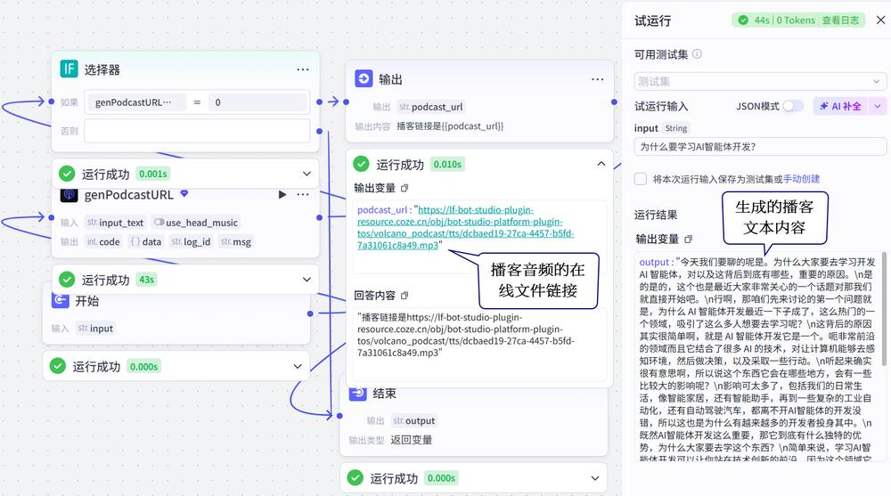
第 28 页 · 5.4
5.4
创建视频类智能体
掌握视频分析与理解、视频生成与编辑的核心技能
第 29 页 · 5.4.1
5.4.1
视频类智能体的应用场景
视频类智能体需要处理时间维度上的连续信息，同步处理图像、音频和文本信息，技术架构更加复杂，应用场景更加广泛。
视频内容分析与摘要
视频创作与编辑
交互式视频体验
视频类智能体的技术挑战
视频信息融合：需要同步处理图像、音频和文本信息，理解时间维度上的连续变化
计算资源需求：视频处理通常需要更高的计算能力和存储资源
实时性要求：交互式视频应用对延迟和响应速度有更高要求
项目5 开发多模态智能体
29
第 30 页 · 5.4.2
5.4.2
扣子编程的视频处理能力
| 能力 | 说明 | 技术实现 |
| 多模态信息提取 | 从视频中提取图像、音频、文本信息 | 视频提取音频节点、视频抽帧节点 / 第三方视频下载和视频提取类插件 |
| 视频分析与理解 | 对视频信息进行深度分析和理解 | 具有视觉理解功能的大模型（如"豆包·1.6·视觉理解"） / 第三方视频理解和视频解析类插件 |
| 视频生成与编辑 | 自动生成视频、剪辑与合成、添加特效 | 视频生成节点、"Doubao-视频生成"插件 / "视频剪辑"插件（字幕添加、音视频合成、视频拼接、插帧、超分辨率） / 第三方插件（如剪映系列） |
| 视频通话 | 高质量、低延迟、支持视频流的实时对话 | 直接为智能体开启视频通话功能 / 支持实时视频交互和屏幕共享 |
项目5 开发多模态智能体
30
第 31 页 · 同步训练5-4
同步训练5-4
搭建视频处理工作流
搭建test_videoFunc工作流，测试扣子编程的视频处理能力，对用户输入的视频文件进行分析并提取其中的音频。
1
创建工作流
创建test_videoFunc工作流。配置开始节点输入变量vedio_file（类型为Video，必填）
2
视频分析
添加"大模型-视频分析"节点，选择"豆包·1.6·视觉理解"模型，设置视觉理解输入变量vedio_file
3
提取音频
添加"视频提取音频"节点，设置输入变量video为vedio_file，输出音频格式选择"mp3"
4
结束节点配置
连接结束节点，设置输出变量report（引用视频分析output）和mp3_file（引用提取的audio）
5
试运行测试
上传视频文件，单击"试运行"，智能体给出视频分析报告和提取的音频文件链接
项目5 开发多模态智能体
31
第 32 页 · 案例实战5-4
案例实战5-4
一键生成景点推介短视频（一）
用户输入景点名称，智能体自动生成可编辑的剪映草稿。结合速推AIGC插件体系，将大模型文本生成、文生图、文生音频、视频合成串联起来，实现一键生成景点推介短视频。
整体流程设计
输入景点名称
生成解说词
文本转语音
文生图
视频剪辑合成
输出剪映草稿
技术方案：结合速推AIGC提供的"视频合成_剪映小助手"和"剪映小助手数据生成器"插件，实现从内容生成到视频合成的全自动化流程。所需资源均在扣子编程免费额度内。
关键技术组件
文本生成
大模型节点生成景点解说词
口语化断句，每1~2短句换行
输出Array<String>类型
语音合成
批处理节点批量转换解说词
"语音合成"插件speech_synthesis
voice_id选择"甜美悦悦"
视频合成
速推AIGC剪映插件体系
create_draft + add_audios + add_images + add_captions
字幕最后添加，防止被遮挡
项目5 开发多模态智能体
32
第 33 页 · 案例实战5-4
案例实战5-4
一键生成景点推介短视频（二）
创建工作流与解说词生成
创建spot_video工作流。添加"解说词生成"大模型节点（旅游视频解说词创作者人设），输出变量commentary类型为Array<String>。严格遵循口语节奏，每1~2个短句后必须换行，单个句子不超过20字。
项目5 开发多模态智能体
33
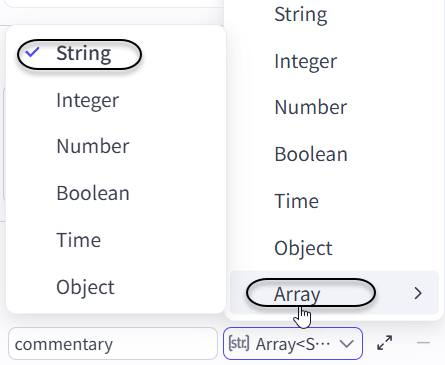
第 34 页 · 案例实战5-4
案例实战5-4
一键生成景点推介短视频（三）
语音合成（批处理节点）
在解说词生成节点后添加批处理节点，重命名为"语音合成"。设置输入变量input的值为解说词生成节点的输出变量commentary的值。
在批处理体中添加"语音合成"插件节点（speech_synthesis工具），配置如下：
● 输入变量text：引用语音合成节点的输入变量input
● voice_id选择"甜美悦悦"
● 将子节点与批处理体右侧小蓝点连接，完成批处理体配置
● 将语音合成节点的输出变量speeches设置为speech_synthesis节点的输出变量link的值（语音文件链接）
项目5 开发多模态智能体
33
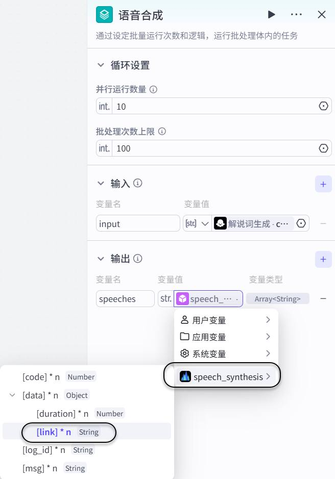
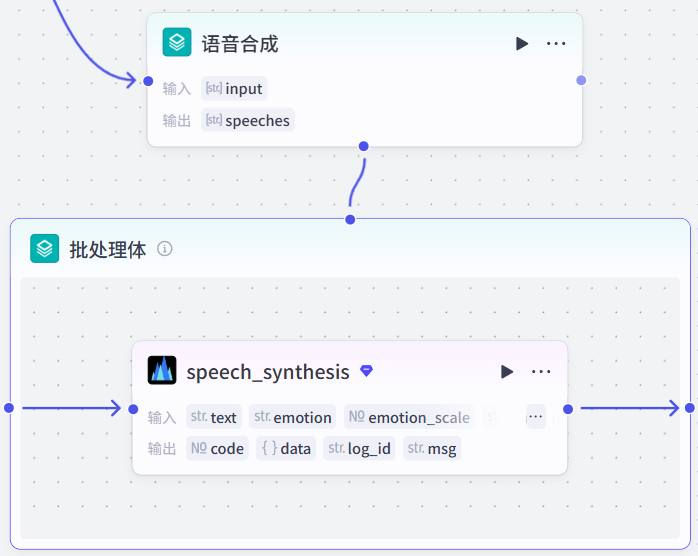
第 35 页 · 案例实战5-4
案例实战5-4
一键生成景点推介短视频（四）
文生图功能
提示词生成
在语音合成节点后添加"提示词生成"大模型节点。人设：AI视觉内容创作专家，将景点文案转化为高质量英文文生图提示词。
输入变量：commentary（解说词生成输出）和spot（开始节点input）。输出变量prompts类型为Array<String>。
文生图（批处理节点）
在提示词生成节点后添加批处理节点，重命名为"文生图"，并行运行数量设置为2。
设置输入变量prompts的值为提示词生成节点的输出变量commentary的值。
在批处理体中添加图像生成子节点：模型选择"Seedream 4.5"，正向提示词引用prompts。
将图像生成子节点与批处理体右侧小蓝点连接，完成批处理体配置。
将文生图节点的输出变量images设置为图像生成节点的输出变量data的值。
项目5 开发多模态智能体
34
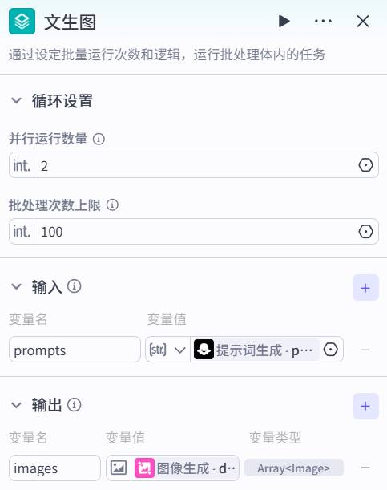
提示词生成要求
每行解说词生成一份提示词。提示词需包含：核心场景与主体、环境与氛围（时间/天气/光影/色彩）、构图与视角、画质与风格。禁止使用模糊词汇，必须用具体细节体现。
第 36 页 · 案例实战5-4
案例实战5-4
一键生成景点推介短视频（五）
视频剪辑合成
使用速推AIGC两个插件："视频合成_剪映小助手"和"剪映小助手数据生成器"，按顺序完成视频剪辑合成。
1
创建剪映草稿
添加"视频合成_剪映小助手"插件（create_draft工具）
设置草稿高度和宽度（与图像生成比例一致）
2
获取时间线
添加"剪映小助手数据生成器"（audio_timelines工具）
输入变量links引用语音合成的speeches
3
制作音频数据
添加audio_infos工具
mp3_urls引用speeches，timelines引用audio_timelines输出
4
批量添加音频与图片
add_audios工具：audio_infos引用audio_infos输出，draft_url引用create_draft输出
add_images工具：image_infos引用imgs_infos输出，draft_url引用create_draft输出
5
添加字幕
caption_infos工具：texts引用解说词commentary，timelines引用audio_timelines
add_captions工具：captions引用caption_infos输出。注意：字幕应当最后添加，防止被遮挡
素材添加顺序（非常重要）
正确的添加顺序：音频 → 图片 → 字幕。字幕必须最后添加，以防止字幕被音频或图片素材遮挡。
入场/出场动画：图片可设置"淡入""淡出"，字幕可设置"飞入""飞出"等动画效果。
项目5 开发多模态智能体
35
第 37 页 · 案例实战5-4
案例实战5-4
一键生成景点推介短视频（六）
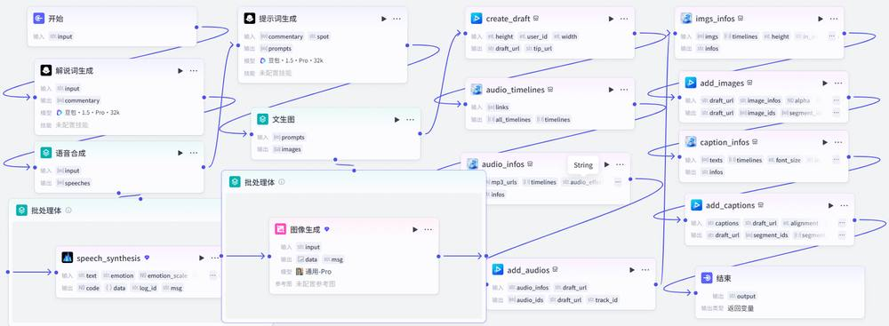
测试与发布工作流
打开"试运行"面板，输入"北京故宫"，单击"试运行"按钮。输出剪映草稿链接，存储在云端。发布工作流。
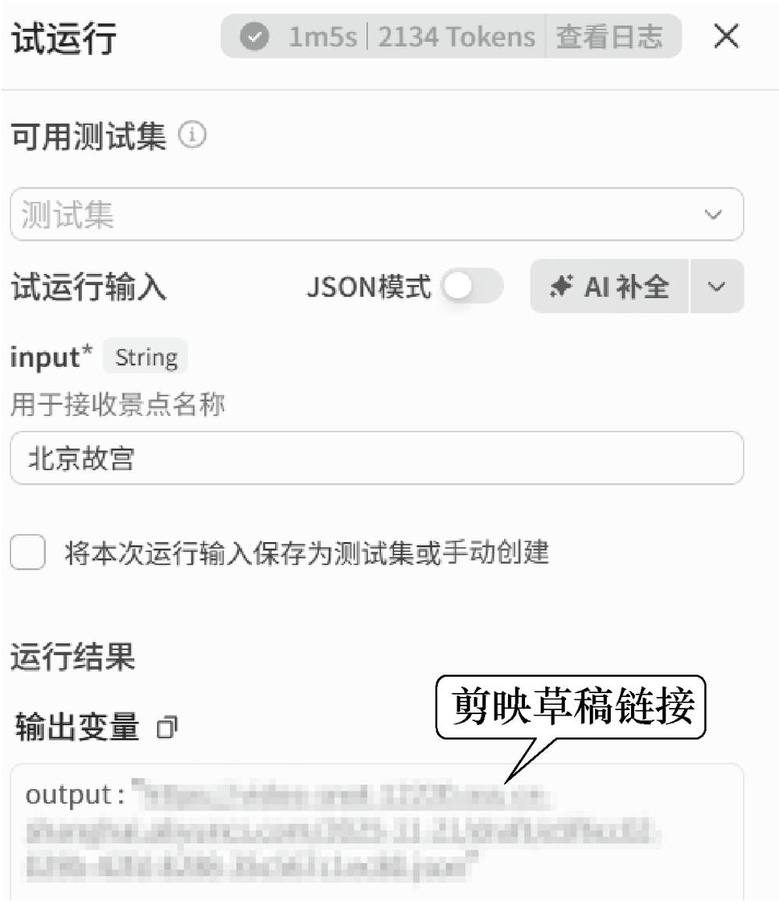
第 38 页 · 案例实战5-4
案例实战5-4
一键生成景点推介短视频（七）
下载剪映草稿
下载安装速推AIGC剪映小助手和剪映。将草稿链接粘贴到剪映小助手，单击"创建剪映草稿"下载到本地。
在剪映中编辑导出
在剪映"本地草稿"列表中查看下载的草稿。播放预览，根据需要进一步编辑，然后导出发布。
项目5 开发多模态智能体
36
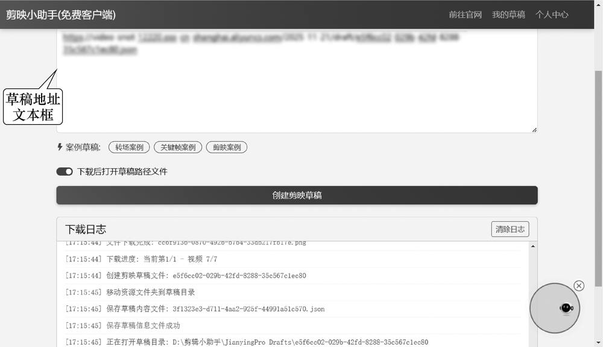
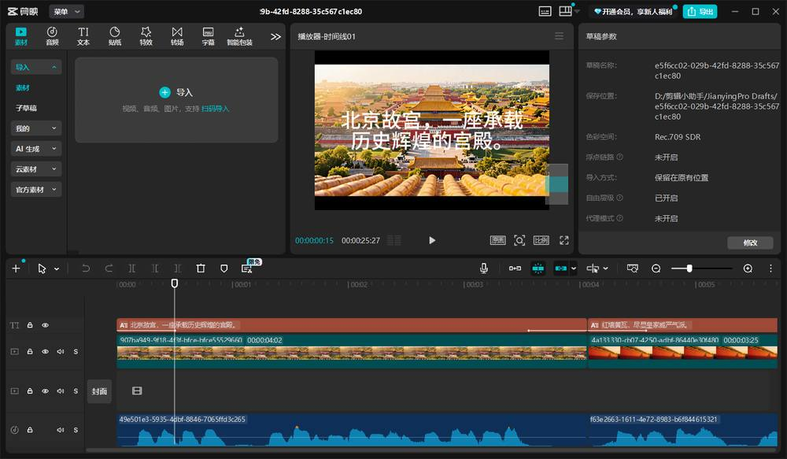
第 39 页 · 案例实战5-4
案例实战5-4
一键生成景点推介短视频（八）
创建智能体
创建"景点短视频生成小精灵"智能体。添加spot_video工作流。配置唯一性核查提示词（如"故宫"需确认是北京故宫还是沈阳故宫）。
项目5 开发多模态智能体
36
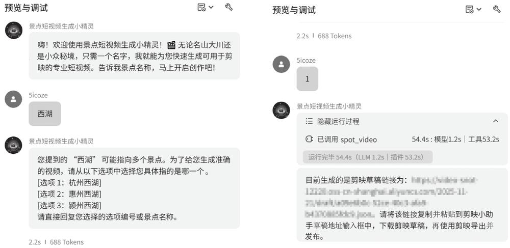
第 40 页 · 5.5
5.5
课后实践
1
图像生成工作流
创建一个简单的工作流，使用图像生成节点的文生图和图生图能力。
建议先根据提示词生成图像，再以此图像作为参考图生成具有特定风格（如动漫）的图像。
体验Seedream系列模型的不同风格效果。
2
看图讲故事工作流
根据上传的图片生成一个生动的小故事，再将其转换为语音以便播放。
使用具有视觉理解能力的多模态大模型实现看图生文，使用官方插件"语音合成"实现文本转语音。
提示词示例："你是一位优秀的儿童故事创作者。请根据对图片的分析内容，创作一个简短、有趣、适合学龄前儿童听的故事。"
3
视频处理工作流
创建一个简单的视频处理工作流，抽取视频的关键帧并生成视频摘要。
使用视频抽帧节点抽取上传的视频文件的关键帧，然后使用具有视觉理解能力的多模态大模型基于关键帧生成视频摘要。
项目5 开发多模态智能体
37
第 41 页 · 项目5 总结
项目5 总结
开发多模态智能体
图像类智能体
图像感知与理解
图像生成（文生图/图生图）
图像处理与画板排版
音频类智能体
语音识别与合成
音视频通话体验
音乐生成与播客
视频类智能体
视频分析与理解
视频生成与编辑
视频通话与合成
《智能体项目开发实战（扣子）（微课版）》 人民邮电出版社